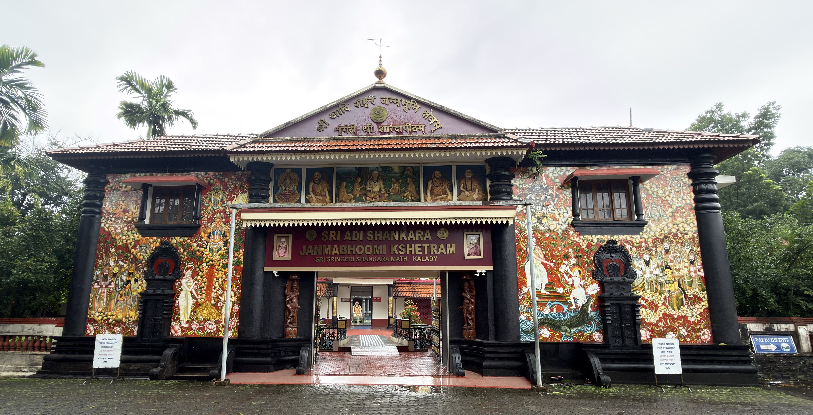
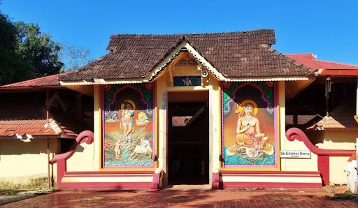
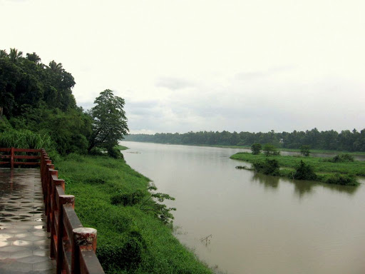
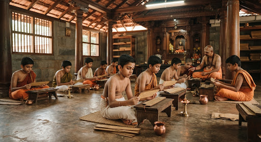

Kalady: The Sacred Advent
The birthplace of Jagadguru Sri Adi Shankaracharya, where the revival of Advaita began on the banks of the eternal Purna.
The Sacred Birthplace of Advaita
सदाशिवसमारम्भां शङ्कराचार्यमध्यमाम्।
अस्मदाचार्यपर्यन्तां वन्दे गुरुपरम्पराम्॥
Nestled in the lush landscapes of Kerala, Kalady stands as a lighthouse of Sanatana Dharma. It was here, over twelve centuries ago, that a young boy named Shankara transformed the spiritual landscape of India.
The Purna River (Periyar), witnessing his childhood miracles, still flows with the same serenity, carrying the essence of Non-duality (Advaita) to all who seek shelter at its banks.
Announcements
The Holy Shrines of the Birthplace
"नमामि शङ्कराचार्यं सर्वलोकैकशरणम्"
I bow to Shankaracharya, the sole refuge of all worldsExplore the historic points of Kalady, where young Shankara spent his childhood and performed miracles.

Ancient Sri Krishna Temple
The ancestral deity of the Kaippilly illam, where the young Master offered his daily prayers before his journey of world-conquest.

The Crocodile Ghat
The hallowed site of the 'Crocodile Miracle' where Shankara took Sanyasa, marking the beginning of his mission to restore Vedic truth.

Kalady Veda Pathashala
A vibrant hub of spiritual education, preserving the oral tradition of the Vedas through disciplined learning and deep contemplation.
The Kanakadhara Stotram: A Rain of Gold
"दद्याद्दयानुपवनो द्रविणाम्बुधारामस्मिन्नकिञ्चनविहङ्गशिशौ विषण्णे"
Kanakadhara Stotram · Verse invoking Goddess Lakshmi's compassionMoved by the poverty and selfless heart of a lady who could only offer a single withered Amla fruit, the young Master Shankara composed twenty-one verses in praise of Goddess Lakshmi.
The Sanctuary of Advaita
Step into the spiritual presence of Adi Shankara. Reflect on self-inquiry dialogue or immerse yourself in the sacred vibrations of temple chants.
Guru Prashnottara
Select a question of self-inquiry to receive Adi Shankaracharya's answers from the sacred *Prashnottara Ratna Malika*.
Click on a question above to begin self-inquiry with the Jagadguru...
Sound of Kalady
Immerse your mind in the meditative soundscapes of traditional Vedic chants and stotrams composed at the birthplace.
Your Journey to Kalady
"तीर्थयात्रा परा पुंसां सर्वपापप्रणाशिनी"
Pilgrimage is the supreme purifier of all past actionsGuest Accommodation (Sringeri Nilayam)
Devotees visiting the birthplace of Sri Adi Shankaracharya can seek comfortable, clean boarding at the Sri Sringeri Shankara Math Guest House (Adi Shankara Nilayam). Designed to foster a spiritual atmosphere, the lodging facilities offer a peaceful sanctuary after daily prayers.
Facilities
- Single/Double rooms with standard amenities.
- Traditional vegetarian meals served daily (Annadanam).
- Serene library with books on Advaita philosophy and Sringeri Math history.
Booking Guidelines
Due to the sacred nature of the site and limited availability, rooms are allocated on a first-come, first-served basis. Devotees are highly encouraged to contact the Temple Office via email or phone at least 7-10 days in advance of their pilgrimage.
Daily Puja Schedule & Special Offerings
The daily rituals inside the Sri Sharadamba and Sri Adi Shankara shrines are conducted strictly in accordance with traditional Vedic rules. Devotees are invited to witness these sacred offerings throughout the day.
Daily Pujas
Devotee Offerings (Sevas)
Devotees can sponsor special prayers performed in their names for spiritual welfare and blessings:
- Adi Shankara Ashtothara Archana: Offering flowers with 108 names.
- Sharadamba Suhasini Puja: Dedicated to the patron Goddess of wisdom.
- Veda Pathashala Support: Contribution towards sponsoring student education.
Travel Directions & Historical Geography
Kalady is nestled in a highly accessible region of Central Kerala. The Purna River (Periyar) flows directly adjacent to the temple premises, providing a serene environment for meditation and bathing.
Temple Location & Interactive Route Map
Sri Adi Shankara Janmabhoomi Kshethram, Thalayattumpilli, Kalady, Vadakkumbhagom, Kerala 683574
By Air
Cochin International Airport (COK) is only 10 km away. Pre-paid taxis and auto-rickshaws are readily available from the airport terminals to Kalady (approx. 20-minute drive).
By Rail
Angamaly for Kalady (AFK) is the nearest station (8 km). Aluva Railway Station is 16 km away, where major express trains stop. Local buses run frequently between these stations and Kalady.
By Road
Kalady is situated near State Highway 1 and is easily reachable via national highways. Regular bus services operate from Ernakulam (Cochin), Thrissur, and Kottayam.